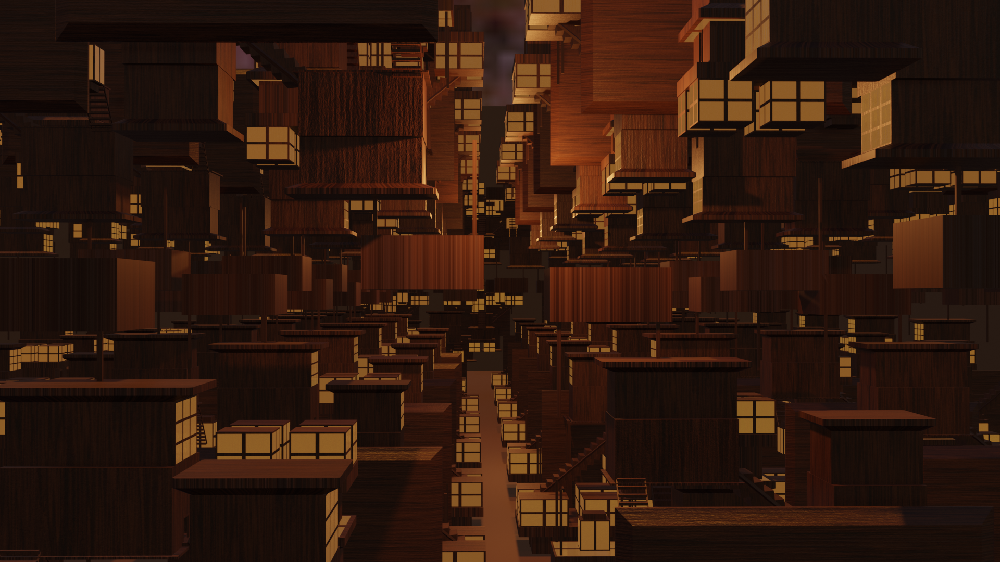
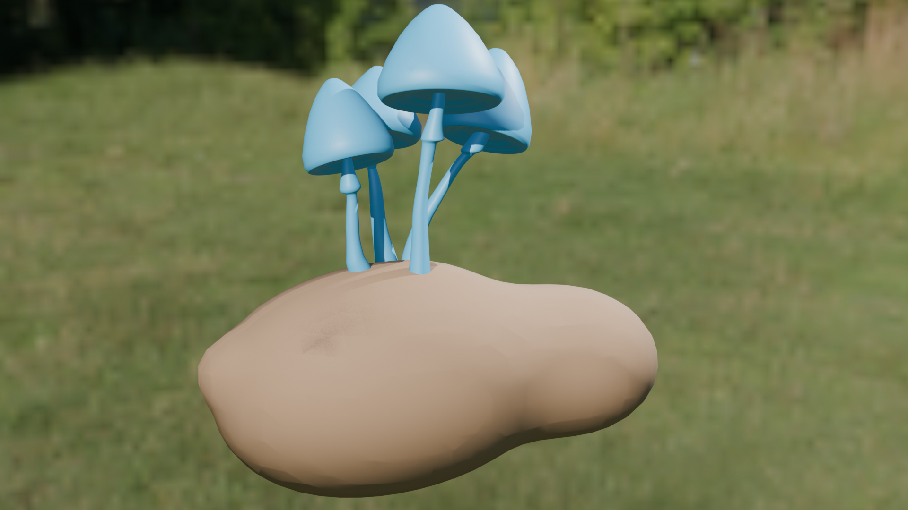
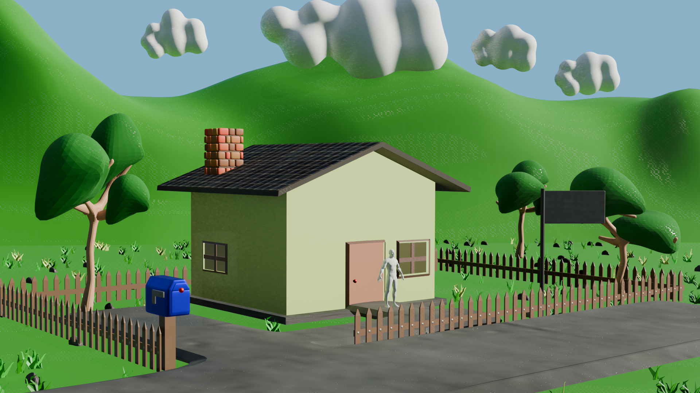
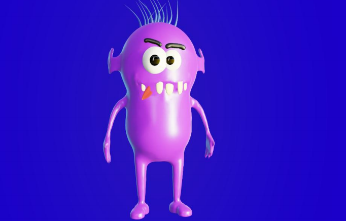
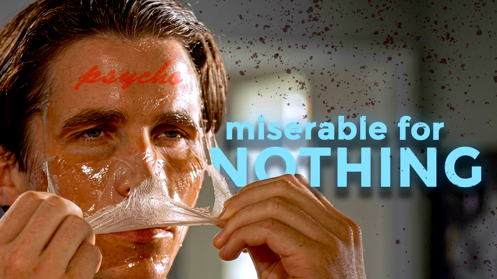
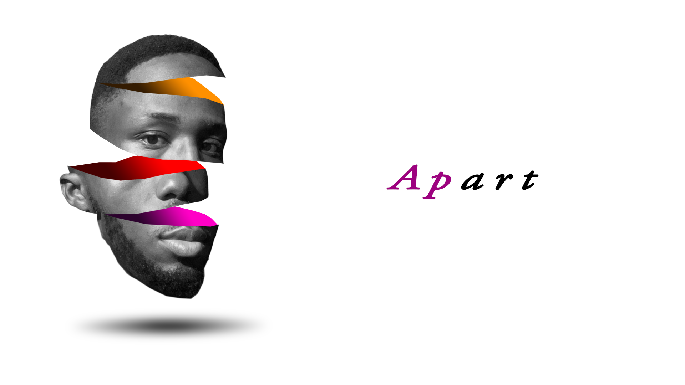
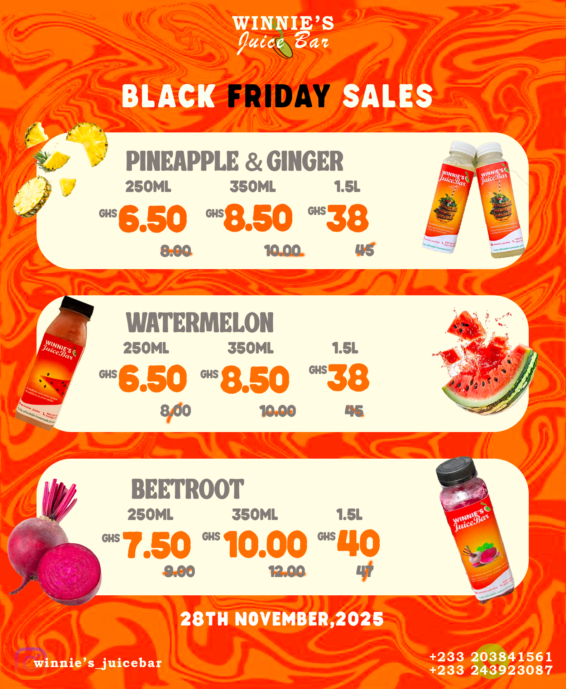

I'm Sabastian — a First-Class Biomedical Engineering graduate who operates at the intersection of research, clinical engineering, 3D design, and visual storytelling. I don't just cross disciplines — I weld them together.

First-Class Honours graduate with peer-reviewed publication in pressure ulcer prevention. Research focus: computational biomechanics, respiratory mechanics, and medical device simulation. 2+ years clinical engineering experience across Ghana — installed 50+ devices, maintained 95%+ uptime, trained clinical staff.
Blender and SolidWorks for 3D modelling, sculpting, and rendering. From anime environments to medical device prototypes — I bring ideas into three dimensions.
Premiere Pro, After Effects, Photoshop, Illustrator. I produce satirical commentary, analytical video essays, and brand identities — because stories are how we connect.
I don't follow the standard flight path. I drift where curiosity takes me — across design, engineering, and storytelling. Comfortable with the unknown, always learning the hard way.
Engineering research, clinical practice, 3D art, and visual storytelling.

Led a two-person research project modelling spatial pressure propagation in lung tissue. Designed anatomically-inspired 3D lung models in SolidWorks and ran ANSYS CFD-FEA simulations to identify critical pressure thresholds (20-35 cmH₂O) for lung tissue damage.

Co-authored a multidisciplinary study analysing pressure, temperature, and humidity as key contributors to pressure ulcer formation. Supported system design, data analysis, and modelling to inform a smart bedsore prevention device. Addresses a clinical challenge affecting 2.5M+ patients annually.

Applied computational modelling techniques to analyse stress distribution and performance characteristics of protective sports equipment. Used simulation-driven insights to guide iterative design improvements for helmets, knee braces, and support sleeves.

Designed and prototyped a low-cost intermittent pneumatic compression device for DVT prevention. Full cycle — clinical needs assessment, hardware design, Arduino-controlled pneumatics, SolidWorks enclosure CAD, cost analysis. Low-resource Ghana settings were the actual design constraint.
I'm a Biomedical Engineering graduate from KNUST with experience spanning Ghana's healthcare system. I began as an intern at UGMC and the Ministry of Health, performing maintenance on devices monthly, repairing critical equipment, and supporting surgeries with Olympus LASER and ERBE ESU systems. I later joined Sysmex West & Central Africa as a Field Service Engineer for haematology and urinalysis analysers, then expanded into immunoassay, ECG, and chemistry systems at Machine Medics. I currently work as a freelance field service engineer, supporting healthcare facilities across the country.


I use Blender and SolidWorks to bring ideas into three dimensions — from anime-inspired environments to medical device prototypes. Below are a few samples; the full collection lives on my portfolio site.

Infinity Castle (Demon Slayer)
Stylized Mushroom
House Environment
Cute Monster SculptI produce satirical commentary, analytical video essays, and brand identities. Premiere Pro, After Effects, Photoshop, Illustrator — these are my instruments for telling stories that connect.

"Why You Always Feel Like You Are Losing"
Photoshop Photo Manipulation
Winnie's Juice Bar — Brand & PromotionThe tools, knowledge, and credentials I carry into every mission.
Ready to go off-grid together?
I respond within 24 hours. Whether you're here to collaborate, commission, or just curious — send a signal.
Click any email address to open your mail client directly. Signal travels fast out here.